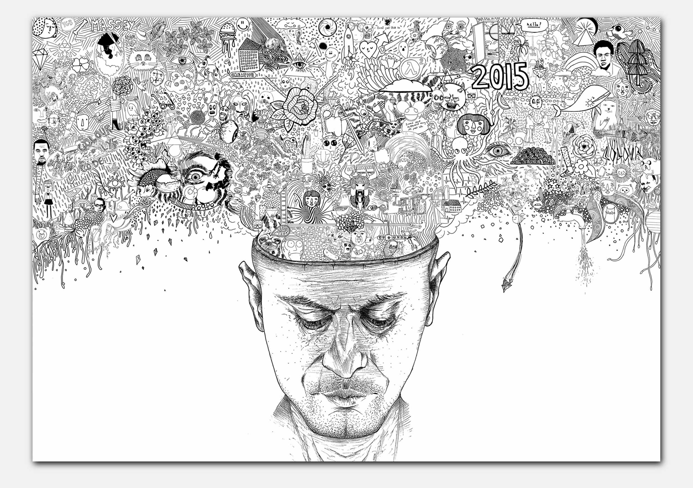
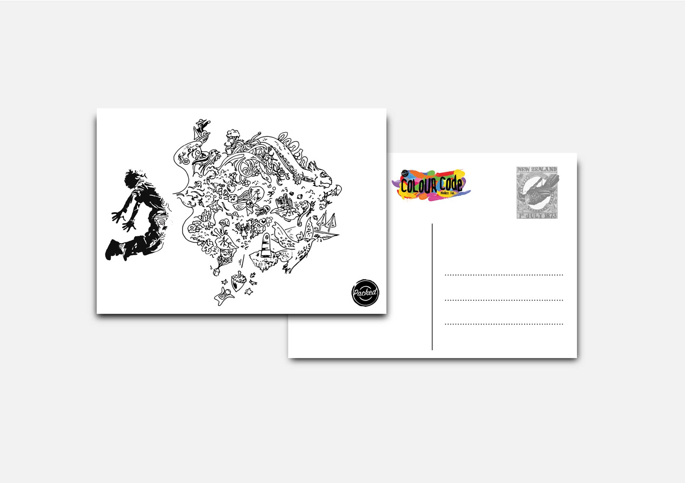
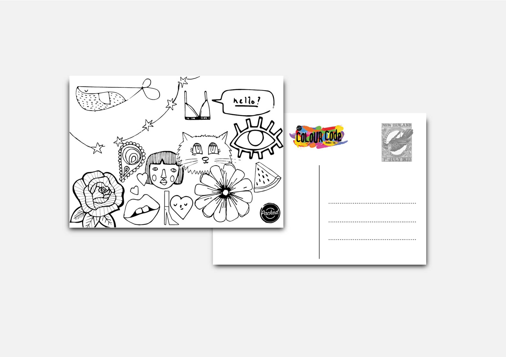
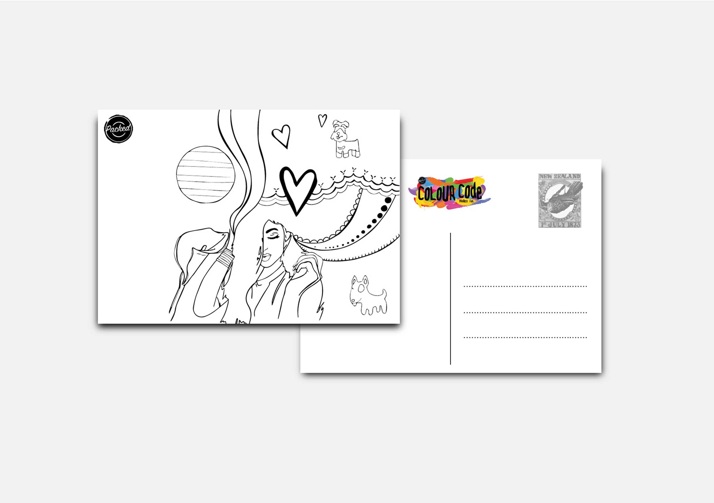
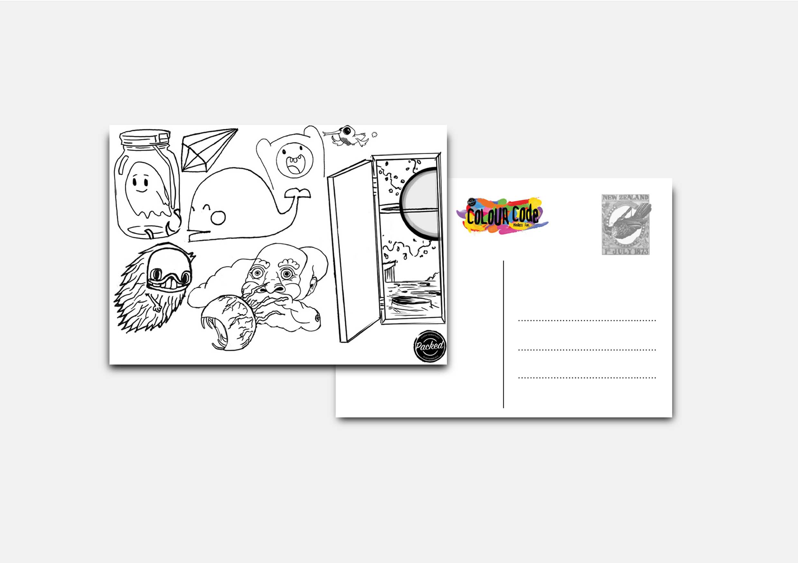
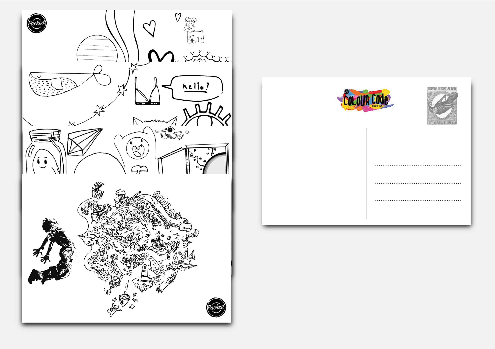

Colour Code
Colour Code originated from a Massey paper called ‘Creative industry’ focused on creating a stall offering a product, activity or service for a shared marketplace. Placed into a team with Dora , Giverny, Lewis and Olivia we shared ideas and explored different products until we settled on reusable eco bags to give users at the market place. As we progressed with the idea and investigated production cost, we realized that this idea was not feasible to us and had to begin a quest to search for a new idea. Running across an earlier idea we redesigned our offering as an activity based on the recent success of colouring in books as a form of relaxing and stress relief. Using Kerby Rosanes style from his art and colouring book anmorphia as an inspiration, we combine our ideas into the final outputs of a 3m x 1.5m colouring wall and a collection of postcards with which users could share their experience. Massive credit to lewis who drew the fantastic giant head and many of the smaller tv characters scattered within the design.





